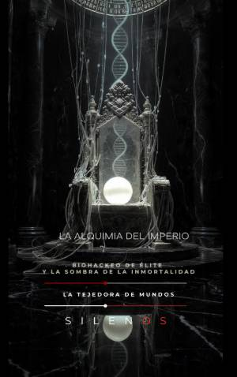

Illuminati
La Alquimia del Imperio: Biohackeo de Élite y la Sombra de la Inmortalidad
Sinopsis
¿Es la búsqueda de la vida eterna un avance científico o la última herramienta de dominación política? La Alquimia del Imperio es una investigación fascinante que recorre la historia oculta de la humanidad para desvelar cómo las élites han intentado, desde tiempos ancestrales, controlar los flujos de la vida y el destino del cuerpo humano. A través de un viaje que conecta la sabiduría mística con la biopolítica moderna, este libro analiza la transición de los antiguos elixires alquímicos a los protocolos actuales de optimización biológica. Desde las tablas de jade de Yu el Grande hasta los experimentos soviéticos de Bogomolets, la obra explora cómo el deseo de trascender la finitud ha moldeado estructuras de poder, sociedades secretas y privilegios biológicos. ¿Qué encontrarás en este libro? Fundaciones Míticas: Un análisis de los primeros manuales operativos del paisaje y la geometría sagrada como instrumento de control biológico. La Edad de los Elixires: La historia de personajes enigmáticos como Saint Germain, Marsilio Ficino y la Condesa Báthory, y su búsqueda del fluido vital. Sociedades del Secreto: Cómo las logias y fraternidades han utilizado el secretismo ritual para gestionar el conocimiento sobre la longevidad y la salud. Biopolítica y Ciencia Total: El impacto de la ingeniería de la voluntad, la farmacología moderna y los sueros para prolongar la vitalidad. El Manifiesto de la Finitud: Una reflexión ética y política sobre el futuro del biohackeo, la soberanía corporal y el riesgo de una aristocracia biológica. ¿Por qué leer esta obra? En un mundo donde la tecnología promete la inmortalidad digital y la edición genética, este libro actúa como una brújula crítica. No es solo un recorrido histórico; es un llamamiento a la justicia y la dignidad humana frente a la mercantilización de la vida. Es una lectura esencial para quienes buscan comprender las implicaciones morales de la ciencia y la importancia de revalorizar nuestra propia finitud. Descubre la genealogía del poder ritual y técnico. Atrévete a mirar tras la sombra de la inmortalidad.